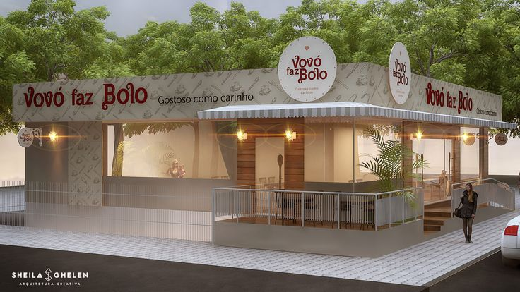

Sobre Nós
Bem-vindo à Vovó faz bolo, onde a tradição se encontra com a paixão pela confeitaria. Nossa história começou há mais de 20 anos, quando Maria decidiu transformar sua paixão por bolos em um negócio. Desde então, temos nos dedicado a criar delícias que encantam o paladar e aquecem o coração.
Nossos bolos são feitos com ingredientes frescos e de alta qualidade, seguindo receitas tradicionais que foram passadas de geração em geração. Cada bolo é uma obra de arte, cuidadosamente decorado para tornar cada ocasião especial ainda mais memorável.
Endereço: Rua das Flores, 123 - Centro, Cidade - Estado SP